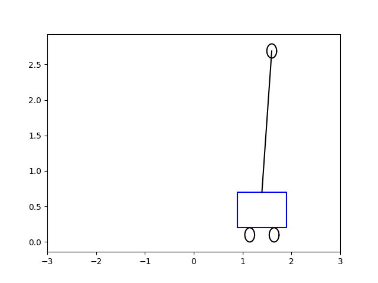
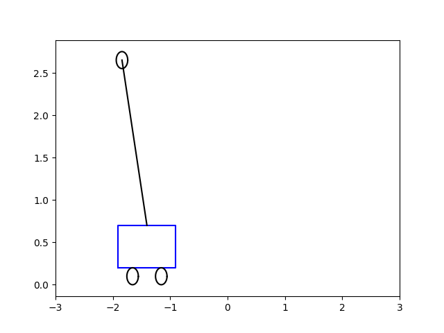
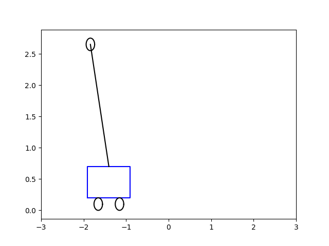
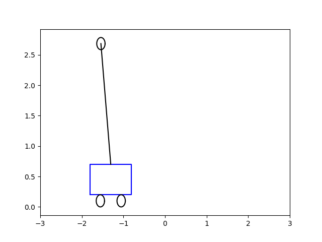

Sadece sağa ve sola giden bir araba üzerinde duran bir direk var. Bu direğin üzerinde bir kütle var; acaba bu direği sadece arabaya uygulanan bir \(F\) kuvveti ile sağa sola götürerek dengeleyebilir miyiz? Belki bazılarımız elimiz üzerinde bir sopayı dengelemeye uğraşmışızdır, yapmaya çalışacağımız buna çok benziyor.
Sistemin hareket denklemlerini modellemek için Lagrange formüllerini kullanacağız. \(L = K - P\) üzerinden,
\[ L = \frac{1}{2} M v_1^2 + \frac{1}{2} m v_2^2 - m g \ell \cos\theta \]
\(v_1\) arabanın hızı, \(v_2\) ise sarkacın hızı. \(x(t)\) arabanın yerini belirleyecek. Hızları yer türeviyle değiştirebiliriz, mesela \(v_1^2 = \dot{x}^2\). Sarkacın hızı \(v_2\)'yi onun yeri üzerinden tanımlamak gerekiyor, sarkacın yeri nedir? Onun yatay, dikey kordinatlarına bakalım, dikey \(x-\ell\sin\theta\), dikey \(\ell\cos\theta\). Genel \(v^2 = v_x^2 + v_y^2\) formülü üzerinden,
\[ v_2^2 = \left( \frac{\mathrm{d}}{\mathrm{d} t} (x - \ell\sin\theta) \right)^2 + \left( \frac{\mathrm{d}}{\mathrm{d} t} (x - \ell\cos\theta) \right)^2 \]
\(v_2\)'yi basitleştirince,
\[ v_2^2 = \dot{x}^2 - 2 \ell \dot{x}\dot{\theta}\cos\theta + \ell^2 \dot{\theta}^2 \]
Lagrangian şu hale geliyor,
\[ L = \frac{1}{2} (M + m) \dot{x}^2 - m \ell \dot{x}\dot{\theta} \cos\theta + \frac{1}{2} m \ell^2 \dot{\theta}^2 - m g \ell \cos\theta \]
Şimdi Euler-Lagrange denklemlerini yazalım,
\[ \frac{\mathrm{d}}{\mathrm{d} t} \frac{\partial L}{\partial \dot{x}} - \frac{\partial L}{\partial x} = F \]
\[ \frac{\mathrm{d}}{\mathrm{d} t} \frac{\partial L}{\partial \dot{\theta}} - \frac{\partial L}{\partial \theta} = 0 \]
İki üstteki denklemde eşitliğin sağ tarafında \(F\) var, niye sıfır değil? Hamilton ve Lagrange-d'Alembert prensibine göre dış kuvvetler bir sisteme eşitliğin sağ tarafından dahil edilebilir. Ayrıca hıza doğru oranda ters yönde etki eden bir sürtünme kuvveti \(\mu\dot{x}\) de ekleriz. \(L\)'yi üstteki denklemlere sokarsak ve basitleştirirsek ters sarkacın hareket denklemlerini elde ediyoruz.
\[ (M+m) \ddot{x} + m \ell \ddot{\theta} \cos\theta - m \ell \dot{\theta}^2 \sin\theta + \mu\dot{x} = F \]
\[ \ell \ddot{\theta} - g \sin\theta + \ddot{x} \cos\theta = 0 \]
Ya da
\[ \left[\begin{array}{rr} M+m & m l \cos\theta \\ \cos\theta & l \end{array}\right] \left[\begin{array}{r} \ddot{x} \\ \ddot{\theta} \end{array}\right] = \left[\begin{array}{c} m l \dot{\theta}^2 \sin\theta - \mu \dot{x} \\ g \sin\theta \end{array}\right] + \left[\begin{array}{r} 1 \\ 0 \end{array}\right] F \]
\[ \left[\begin{array}{r} \ddot{x} \\ \ddot{\theta} \end{array}\right] = \left[\begin{array}{rr} M+m & m l \cos\theta \\ \cos\theta & l \end{array}\right]^{-1} \left( \left[\begin{array}{c} m l \dot{\theta}^2 \sin\theta - \mu \dot{x} \\ g \sin\theta \end{array}\right] + \left[\begin{array}{r} 1 \\ 0 \end{array}\right] F \right) \qquad (1) \]
Örneğe dönelim; Noktalı kısımları atarsak 1. dereceden bir yaklaşıksallama ve lineerizasyon elde ediyoruz ve görülen \(x^\ast,y^\ast\) noktasındaki değerleri kullanılan 2x2 matrisi Jacobian matrisidir.
Birinci derece ODE sistemi elde etmek için konum vektörünü tanımlayalım,
\[ \frac{\mathrm{d}}{\mathrm{d} t} \left[\begin{array}{r} x_1 \\ x_2 \\ x_3 \\ x_4 \end{array}\right] = \frac{\mathrm{d}}{\mathrm{d} t} \left[\begin{array}{r} x \\ \theta \\ \dot{x} \\ \dot{\theta} \end{array}\right] \]
(1)'den elde edilen matrisin 1. ve 2. satırı sırasıyla alttaki noktalı yerlere gelecek,
\[ \frac{\mathrm{d}}{\mathrm{d} t} \left[\begin{array}{rrr} x_1 \\ x_2 \\ x_3 \\ x_4 \end{array}\right] = \left[\begin{array}{c} x_3 \\ x_4 \\ \textrm{.. 1. satır ...} \\ \textrm{.. 2. satır ...} \end{array}\right] \]
Görüldüğü gibi \(x_1,x_2\)'nin ne olduğu basit. \(x_3,x_4\) için (1) denklemindeki matris işlemlerini yapıp 1. ve 2. satırlarını \(x_3,x_4\) için kullanabiliriz. Önce (1) formülündeki gerekli \(x_i\) değişken değişimlerini yaparız,
\[ \left[\begin{array}{rr} M+m & m l \cos x_2 \\ \cos x_2 & l \end{array}\right]^{-1} \left( \left[\begin{array}{c} m l x_4^2 \sin x_2 - \mu x_3 \\ g \sin x_2 \end{array}\right] + \left[\begin{array}{r} 1 \\ 0 \end{array}\right] F \right) \]
Bu cebirsel olarak oldukca çetrefil bir işlem. sympy ile işlemler daha kolay yapılabilir,
import sympy
x1, x2, x3, x4 = sympy.symbols('x1 x2 x3 x4')
M, m, l, mu, g, F = sympy.symbols('m M l mu g F',constant = True)
a = sympy.Matrix([[M+m, m*l*sympy.cos(x2)],[sympy.cos(x2), l]])
b = sympy.Matrix([m * l * x4**2 * sympy.sin(x2) - mu*x3 + F , g * sympy.sin(x2)])
c = a.inv() * b
sympy.pprint(sympy.latex(sympy.simplify(c)))\left[\begin{matrix}\frac{F - \frac{M g \sin{\left(2 x_{2} \right)}}{2} + M l
x_{4}^{2} \sin{\left(x_{2} \right)} - \mu x_{3}}{M \sin^{2}{\left(x_{2} \right
)} + m}\\\frac{g \left(M + m\right) \sin{\left(x_{2} \right)} - \left(F + M l
x_{4}^{2} \sin{\left(x_{2} \right)} - \mu x_{3}\right) \cos{\left(x_{2} \right
)}}{l \left(M \sin^{2}{\left(x_{2} \right)} + m\right)}\end{matrix}\right]İki matris satırı elde ettik, bunları yerine koyalım,
\[ \frac{\mathrm{d}}{\mathrm{d} t} \left[\begin{array}{rrr} x_1 \\ x_2 \\ x_3 \\ x_4 \end{array}\right] = \left[\begin{array}{c} x_3 \\ x_4 \\ \frac{F - \frac{M g \sin{\left(2 x_{2} \right)}}{2} + M l x_{4}^{2} \sin{\left(x_{2} \right)} - \mu x_{3}}{M \sin^{2}{\left(x_{2} \right )} + m} \\ \frac{g \left(M + m\right) \sin{\left(x_{2} \right)} - \left(F + M l x_{4}^{2} \sin{\left(x_{2} \right)} - \mu x_{3}\right) \cos{\left(x_{2} \right )}}{l \left(M \sin^{2}{\left(x_{2} \right)} + m\right)} \end{array}\right] \qquad (2) \]
Bir gayrı-lineer ODE elde etmiş olduk. Şimdi yapmak istediğimiz bu sistemi
\[ \dot{x} = Ax(t) + B u(t) \]
\[ y(t) = C x(t) + D u(t) \]
haline sokmak, yani lineer bir şekilde temsil edebilme, örnekte birinci denklem \(\dot{x} = Ax(t) + B u(t)\) yeterli. Lineerizasyonu kritik nokta yakınında yapacağız, o zaman LQR adlı bir teknik sistemin o noktada kalması için gerekli kontrol \(u\) değerini hesaplayabiliyor.
Gayri-Lineer Dinamik ve Kaos, Ders 6'da Jacobian matrisi ile denge noktaları yakınında bir sistemi nasıl lineerize edebileceğimizi gördük. İki boyutta \(x^\ast,y^\ast\) denge noktası yakınında, \(\dot{u} = \dot{x} = f(x,y)\) ve \(\dot{v} = \dot{y} = g(x,y)\) ODE sistem için mesela (buradaki \(u\) üstteki \(u\) ile karıştırılmasın), ya da,
\[ \left[\begin{array}{r} \dot{u} \\ \dot{v} \end{array}\right] = \left[\begin{array}{r} f(x,y) \\ g(x,y) \end{array}\right] \]
için, lineerizasyon sonrası şöyle bir görüntü var,
\[ \left[\begin{array}{r} \dot{u} \\ \dot{v} \end{array}\right] = \left[\begin{array}{rr} \frac{\partial f}{\partial x} & \frac{\partial f}{\partial y} \\ \frac{\partial g}{\partial x} & \frac{\partial g}{\partial y} \end{array}\right]_{x^\ast,y^\ast } \left[\begin{array}{r} u \\ v \end{array}\right] + ... \]
Örneğe dönelim; (2) matrisinin Jacobian'inin kritik nokta \((0,0,0,0)\)'daki değerini bulabiliriz. Jacobian'ın ana matris 1. ve 2. satırı için alınan kısmı türevleri basit,
\[ J_x = \left[\begin{array}{cccc} 0 & 0 & 1 & 0 \\ 0 & 0 & 0 & 1 \\ & \textrm{..... 3. satır ...} & & \\ & \textrm{..... 4. satır ...} & & \end{array}\right] \]
sympy ile yapılabilir. İlginç olan tek sonuçlar \(x_2,x_3\) üzerinden Jacobian,tmp = sympy.diff(c[0], x2).subs({x1:0,x2:0,x3:0,x4:0}).simplify()
print(sympy.latex(tmp), ',')
tmp = sympy.diff(c[0], x3).subs({x1:0,x2:0,x3:0,x4:0}).simplify()
print(sympy.latex(tmp), ',')
tmp = sympy.diff(c[1], x2).subs({x1:0,x2:0,x3:0,x4:0}).simplify()
print(sympy.latex(tmp), ',')
tmp = sympy.diff(c[1], x3).subs({x1:0,x2:0,x3:0,x4:0}).simplify()
print(sympy.latex(tmp), ',')- \frac{M g}{m} ,
- \frac{\mu}{m} ,
\frac{g \left(M + m\right)}{l m} ,
\frac{\mu}{l m}Bu değerleri \(J_x\)'deki yerlerine koyarsak,
\[ A = J_x = \left[\begin{array}{cccc} 0 & 0 & 1 & 0 \\ 0 & 0 & 0 & 1 \\ 0 & - \frac{M g}{m} & - \frac{\mu}{m} & 0 \\ 0 & \frac{g \left(M + m\right)}{l m} & \frac{\mu}{l m} & 0 \end{array}\right] \]
Ardından \(F\) için Jacobian, yine 1. ve 2. satır atlanıyor, (2)'nin 3. ve 4. satırları için kısmı türev,
tmp = sympy.diff(c[0], F).subs({x1:0,x2:0,x3:0,x4:0}).simplify()
print(sympy.latex(tmp), ',')
tmp = sympy.diff(c[1], F).subs({x1:0,x2:0,x3:0,x4:0}).simplify()
print(sympy.latex(tmp))\frac{1}{m} ,
- \frac{1}{l m}\[ B = J_F = \left[\begin{array}{c} 0 \\ 0 \\ 1/m \\ - 1 / lm \end{array}\right] \]
Böylece \((0,0,0,0)\) kritik noktası etrafında lineerize edilmiş sistemimiz için bir \(\dot{x} = A x + B u\) denklemi elde etmiş olduk,
Lineer Karesel Düzenleyici (Linear Quadratic Regulators -LQR-)
Sistemi belirtilen kritik nokta etrafında lineerize etmemizin bir sebebi vardı; çünkü bir lineer sistem varsa, o sistem herhangi bir denge noktası etrafında LQR ile tutulabilir. \((0,0,0,0)\) noktası çubuğun tam dik olduğu (açı orada sıfır) yerdir, amacımız çubuk dengelemek, o zaman dengelemeyi burada yapabiliriz. Eğer sistem bu duruma yakınsa (çubuğun tam aşağı düşmüş olduğu durumlarda bu yaklaşım ise yaramaz), LQR kullanılabilir. Tam tanım; başlangıcı \(x_0\) olarak bilinen bir
\[ \dot{x} = A x + B u \]
sistemi için amaç
\[ J = \frac{1}{2} \int_{0}^{\infty} [ x^T(t) Q x(t) + u^T(t) R u(t) ] \mathrm{d} t \]
\[ x(t_0) = x_0 \]
bedel fonksiyonunu minimize etmektir, yani bu minimizasyonu yapacak kontrol \(u\) değerini bulmaktır. Çözüm \(u(t) = -K(t) x (t)\), ve \(K\) cebirsel Riccati denklemi üzerinden bulunur [2]. Hesapsal pek çok kütüphanede bu çözümü yapacak lqr çağrıları vardır. \(Q,R\) ile \(x,u\) içindeki hangi değişkenlere daha önem, ağırlık vereceğimizi tanımlayabiliriz, mesela iki boyutlu durumda köşegen matriste
\[ Q = \left[\begin{array}{rrr} 2 & 0 \\ 0 & 1 \end{array}\right] \]
tanımlamak \(x_1\)'e \(x_2\)'ye göre iki kat daha önem verildiğini gösterir.
O zaman gerekli \(u(t)\)'yu bulduktan sonra bu aksiyonu sisteme uygulayabiliriz, yani \(\dot{x} = A x + B u\) sistemini bulunan \(u\) ile entegre ederiz, ve bu sistem dengeye giden bir çubuk olacaktır. Altta bu çözümü, başlangıç acısı \(\theta = 0.5\) ve \(-5\) için görüyoruz. Sonuçlar animasyon olarak [5,6]'da.
from scipy.integrate import odeint
import control, gym, time
import numpy as np
from numpy import sin, cos
import matplotlib.pyplot as plt
import numpy as np
import math
import time
l_bar = 2.0 # length of bar
l = l_bar
m = 0.3 # [kg]
g = 9.8
m = 0.3
M = 1.0
l = 1.0
mu = 0.1 # friction
Q = np.array([[100., 0., 0., 0.],[0, 1, 0, 0],[0, 0, 1000, 0],[0, 0, 0, 1]] )
R = 0.0001
init_theta = -5.0
#init_theta = 0.5
x0 = [0.0, 0.0, init_theta, 2.0]
def flatten(a):
return np.array(a).flatten()
def show_cart(fout, xt, theta):
cart_w = 1.0
cart_h = 0.5
radius = 0.1
cx = np.matrix([-cart_w / 2.0, cart_w / 2.0, cart_w /
2.0, -cart_w / 2.0, -cart_w / 2.0])
cy = np.matrix([0.0, 0.0, cart_h, cart_h, 0.0])
cy += radius * 2.0
cx = cx + xt
bx = np.matrix([0.0, l_bar * math.sin(-theta)])
bx += xt
by = np.matrix([cart_h, l_bar * math.cos(-theta) + cart_h])
by += radius * 2.0
angles = np.arange(0.0, math.pi * 2.0, math.radians(3.0))
ox = [radius * math.cos(a) for a in angles]
oy = [radius * math.sin(a) for a in angles]
rwx = np.copy(ox) + cart_w / 4.0 + xt
rwy = np.copy(oy) + radius
lwx = np.copy(ox) - cart_w / 4.0 + xt
lwy = np.copy(oy) + radius
wx = np.copy(ox) + float(bx[0, -1])
wy = np.copy(oy) + float(by[0, -1])
plt.figure()
plt.plot(flatten(cx), flatten(cy), "-b")
plt.plot(flatten(bx), flatten(by), "-k")
plt.plot(flatten(rwx), flatten(rwy), "-k")
plt.plot(flatten(lwx), flatten(lwy), "-k")
plt.plot(flatten(wx), flatten(wy), "-k")
plt.xlim(-3, 3)
plt.savefig(fout)
A = np.array([[0, 0, 1, 0],
[0, 0, 0, 1],
[0, -(M/m)*g, -mu/m, 0],
[0, (m+M)*g/m*l, mu/m*l, 0]])
B = np.array([[0], [0], [1/m],[-1/m*l]])
K,X,e = control.lqr(A,B,Q,R);
def rhs(x, t):
x1,x2,x3,x4 = x
xs = np.array([1,0,0,0])
F = np.float(np.dot(K,(xs - np.array([x1,x2,x3,x4]))))
tmp1 = (F - M*g*sin(2*x2)/2 + M*l*x4**2*sin(x2) - mu*x3) \
/ (M*sin(x2)**2 + m)
tmp2 = (g*(M + m)*sin(x2) - (F + M*l*x4**2*sin(x2) - mu*x3)*cos(x2)) \
/(l*(M*sin(x2)**2 + m))
return [x3, x4, tmp1, tmp2 ]
t = np.linspace(0, 5, 100)
sol = odeint(rhs, x0, t)
for i,row in enumerate(sol):
if i % 5 == 0:
show_cart('frames2/cart-%04d' % i, row[0], row[1])\(\theta = 0.5\)


 
\(\theta = -5.0\)
 

 
Kodlar genel hatlarıyla [4]'u baz almıştır.
Özyineli bir şekilde LQR yapan bir diğer kod [7]'de, ilqr.py dosyasında bulunabilir.
Ödev
[4] bağlantısında paylaşılan kodda bir "yukarı fırlatma (swing-up)'' tekniği görülüyor. Bu teknik direğin tam aşağı düşmüş olduğu durumlarda kullanılabilir, (üst denge noktasından uzaktayız, bu sebeple mevcut sistem ise yaramaz), arabaya hızlı ve belli bir şekilde sağ-sol hareketi yaptırarak direği "yukarı fırlatıyoruz''. [4]'teki kod bağlantısını takip edip Matlab kodlara bakarak aynısını üstteki koda uygulayın.
Kaynaklar
[1] Wikipedia, Inverted Pendulum, http://www.wikipedia.com/wiki/Inverted_pendulum
[2] Wikipedia, Optimal control, http://wikipedia.com/wiki/Optimal_control
[3] Gutman, Technion, Linear Systems Lecture, http://leo.technion.ac.il/Courses/LS/
[4] Suhm, {}, https://www.youtube.com/watch?v=KqdP0DVZ-lQ
[5] Bayramlı, Animasyon, https://github.com/burakbayramli/classnotes/blob/master/phy/phy_050_cont5/frames1/cart.gif
[6] Bayramlı, Animasyon, https://github.com/burakbayramli/classnotes/blob/master/phy/phy_050_cont5/frames2/cart.gif
[7] Eiting, ilqr, https://gist.github.com/jeiting/c381e195d6153eaf657c21f691c2e456
{kind=link}
{kind=link}